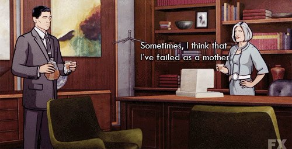
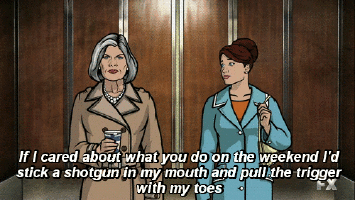

Malory Archer is currently head and spymaster of ISIS, International Secret Intellegence Service. In her youth, she was employed by OSS - Office of Strategic Services - and was quickly sent abroad to protect the United States. During this time, she got pregnant by one of four possible men, including Major Nikolai Jakov (Head of the KGB), and famous jazz drummer Buddy Rich. Nine months later, she delivered her son Stirling at a bar in Morocco, where she met Woodhouse.
Woodhouse would come to raise Stirling for five year, but after that, she came back to raise him. She might not have been the perfect mother, oftentimes being emotionally harsh or deceptive to her son, she does love him very much, and gets incredibly protective of her son. At work, she is a powerful woman, with her eyes on everything and everyone, and a drink in her hand. While she may seem scornful of her employees, she does care about their well being.
Malory is one of the main characters in Archer, a TV show about the antics of Archer and his co-workers at ISIS.